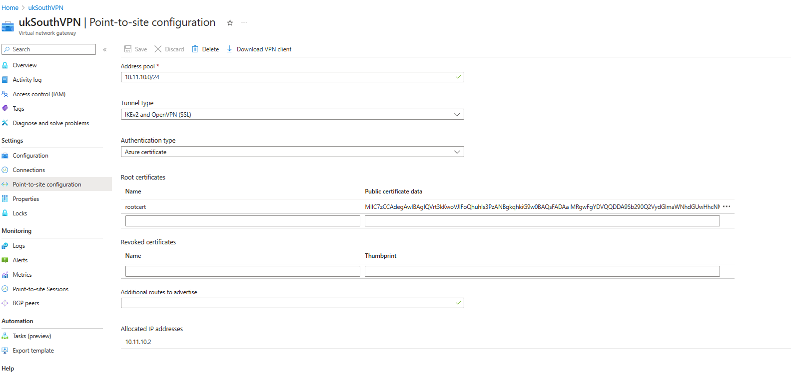
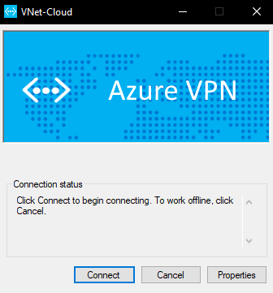
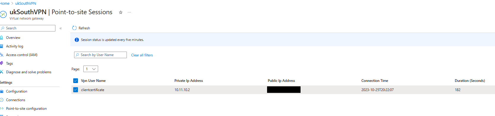
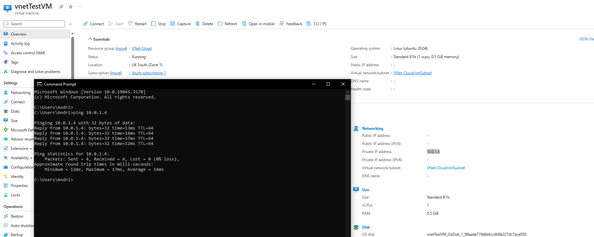

Continuing on from project 4 where I created a private VNet I added a VPN to allow private client access to the virtual network
Resources used:
• VPN (Virtual Network Gateway)
• Certificates
I began by deploying a VNG in my my existing private VNet - deploying this also creates a public IP that I can use to connect to the VPN as well as a gateway subnet from which IP's will be assigned to VPN connected clients
Once the deployment completed I had to configure the point-to-site configuration, this involved specifying an address pool, a tunnel type, and authentication method (where I chose to use certificates)
I had to create a root certificate so I could authenticate with the VPN upon connection, I did this by running the following code to generate a root & child certificate:
# GENERATE CERTIFICATES WITH POWERSHELL
# root certificate
$cert = New-SelfSignedCertificate -Type Custom -KeySpec Signature -Subject "CN=RootCertificate" -KeyExportPolicy Exportable -HashAlgorithm sha256 -KeyLength 2048 -CertStoreLocation "Cert:\CurrentUser\My" -KeyUsageProperty Sign -KeyUsage CertSign
# client certificate
New-SelfSignedCertificate -Type Custom -DnsName P2SChildCert -KeySpec Signature -Subject "CN=ClientCertificate" -KeyExportPolicy Exportable -HashAlgorithm sha256 -KeyLength 2048 -CertStoreLocation "Cert:\CurrentUser\My" -Signer $cert -TextExtension @("2.5.29.37={text}1.3.6.1.5.5.7.3.2")
I exported the root certificate from certmgr - and entered the certificate data in the correct field

I then downloaded the VPN client, installed the accociated client and connected

I was able to verify that the client by confirming that I was on the list of VPN clients as well as being able to ping a VM from my virtual machine through the private network

